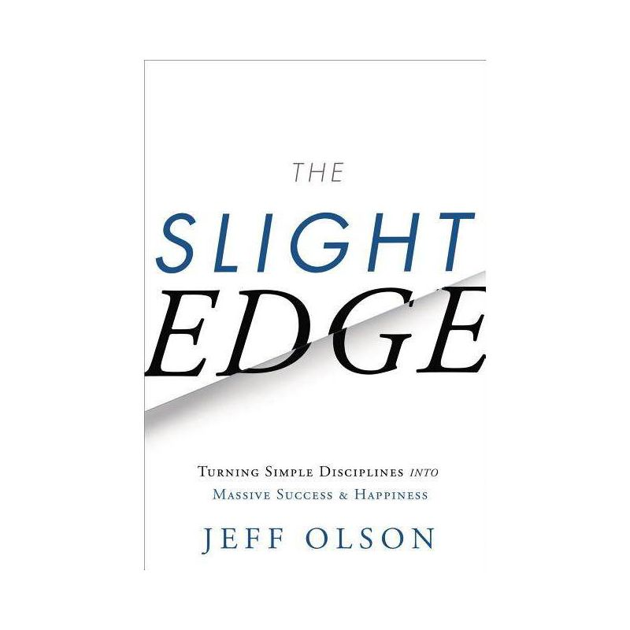

Library › Self-Improvement
The Slight Edge — Summary & Key Lessons

Turning simple disciplines into massive success — the easy daily actions that are just as easy NOT to do.
📖 OPEN THE FULL INTERACTIVE BREAKDOWN →🌐 Read it in Hindi, Hinglish, Gujarati, Tamil & 22 more languages — free, with audio.
💡 The Big Idea
Olson's single mechanism explains both mansions and bankruptcies: THE SLIGHT EDGE — every day, in every area, you're doing simple actions that are 'easy to do, and easy not to do': the daily reading or the daily scrolling, the apple or the burger, the call made or skipped. None matters today (the killer fact: the consequences are INVISIBLE in the moment — skip the workout and nothing happens; that's why people skip it); ALL of them matter across five years, because time is the multiplier that turns either choice into destiny. The success curve and failure curve start from the same point, diverge invisibly, and end in different lives. His toolkit: get ON the curve (do the easy disciplines despite no visible payoff), stay on through the valley (results always lag effort — most quit in the gap), use the power of completion, embrace 'plant, cultivate, harvest' seasons, and master the seven slight-edge habits — showing up, consistency, positive attitude, commitment for the long haul, faith and a burning desire, price-paying willingness, and slight-edge integrity: doing it even when no one's watching.
🧠 The 6 Key Lessons
Lesson 1: Easy to Do, Easy Not to Do: The Invisible Mechanics of Everything
Chapters 1–4: The Beach Bum and the Millionaire / The First Ingredient
The book's engine, stated plainly: the actions that build extraordinary lives are SIMPLE — read ten pages, save small amounts, make the extra call, eat slightly better, express appreciation — so simple that everyone CAN do them; and precisely because they're easy, they're equally easy to SKIP, and skipping produces no visible penalty today (the burger doesn't kill you at lunch; the unread book subtracts nothing this week). That invisibility is the whole trap: both compounding curves — success and failure — feel IDENTICAL in the moment; only time reveals which one you've been riding. Olson's penny-doubling opener re-frames the choice: a penny doubled daily for a month beats a million-dollar lump — but only for the person who keeps doubling through the boring first weeks when the penny pile looks pathetic. The slight edge, he insists, is 'always working — for you or against you': there is no neutral gear; the only question is direction.
📖 Example: Olson's framing parable: two young men receive the same choice — a million dollars cash or a penny that doubles for 31 days; the cash-taker celebrates immediately, the penny-taker looks foolish through day 20 ($5,243)... and finishes with $10.7 million. His… Read the full example →
⚡ Do this: Pick your penny in the ONE area you most want changed: define the daily discipline so easy it's embarrassing (10 pages, 15 minutes, one call, one appreciation). Then write the twin ledger: what skipping it costs at 5 years, what doing it yields at 5 years — post both where the daily choice happens.
Lesson 2: The Valley of Disappointment: Why Everyone Quits at Day 15
Chapters 5–8: Mastering the Curve / The Secret of Happiness
The curve's cruelest feature: results LAG effort — massively, predictably, always. Between starting the discipline and seeing the payoff stretches what Olson maps as the long flat stretch (Clear later called it the valley of disappointment): weeks or months of faithful deposits with no visible interest, during which the quitter's logic is airtight ('I've been doing this for a month and NOTHING') — and wrong, because the compounding was loading, not failing. Olson's countermeasures: understand plant-cultivate-harvest (you cannot harvest in planting season, and shouting at the field doesn't accelerate it — but skipping cultivation forfeits everything already planted); trust the process over the evidence (the evidence is structurally late); use momentum (the hardest rep of any habit is day one's — completed days make the next cheaper); and beware the equally lagged FAILURE curve: its penalties also arrive late, which is why the smoker, spender, and skipper feel fine right up until they don't. The discipline's real test is emotional: continuing to believe your daily actions matter while the scoreboard insists they don't.
📖 Example: Olson's water-and-rocket imagery pairs the physics: the space shuttle burns most of its fuel in the first minutes — leaving the ground is the expensive part; orbit is nearly free — and habits bill identically: the first three weeks cost more will than the… Read the full example →
⚡ Do this: Pre-sign the valley contract: write your discipline's no-verdict period (minimum 90 days — no evaluations, no quitting decisions inside it) and the lag reminder: 'the results are loading, not missing.' Track completions only — a chain of X's — and let the chain, not the outcomes, be the scoreboard until the contract expires.
Lesson 3: The Seven Slight-Edge Allies: Habits of the Curve-Riders
Chapters 9–12: The Ripple Effect / The Seven Habits
Olson's profile of people who stay on the success curve compresses into seven attitudes: (1) SHOW UP — be the one who's present when the door opens (half of everything, he argues, is presence: the market call, the gym, the meeting attended); (2) BE CONSISTENT — showing up EVERY day beats showing up brilliantly sometimes; (3) POSITIVE OUTLOOK — not naive cheer but curve-awareness: knowing the flat stretch is normal keeps optimism rational; (4) LONG-HAUL COMMITMENT — enter everything important with a 'however long it takes' clock (the one-year dabbler loses to the ten-year compounder in every field); (5) BURNING DESIRE backed by FAITH — the want that survives evidence-droughts; (6) WILLINGNESS TO PAY THE PRICE — every harvest has a posted cost (time, comfort, ridicule) paid IN ADVANCE and in installments; (7) SLIGHT-EDGE INTEGRITY — doing the disciplines when NO ONE is watching, because the compounding ledger sees everything the audience misses. The ripple bonus: your curve is contagious — the daily disciplines quietly recruit families, teams, and cultures onto whichever curve you're visibly riding.
📖 Example: The showing-up exhibit Olson loves: Woody Allen's dictum ('eighty percent of success is showing up') cashed out in his sales organizations — the reps who simply ATTENDED everything, made the calls on schedule, and outlasted the talented-but-sporadic, year… Read the full example →
⚡ Do this: Grade yourself 1–10 on each of the seven; circle the weakest two. For each, install one structural fix this week (show up: standing calendar blocks; consistency: the X-chain; price: pre-pay one comfort). And run the ripple audit: who watches your daily curve — and which direction are you recruiting them toward?
Lesson 4: Ten Pages and Five Friends: The Slight Edge Applied Everywhere
Chapters 13–17: Invest in Yourself / Learn Through Study and Doing / Your Future
The application sweep: INVEST IN YOURSELF — the master discipline is continuous learning at slight-edge scale: ten pages of a good book daily (≈ a dozen-plus books a year, a private education per decade), audios in dead time, one seminar or course per season — because 'your income tends to follow your personal growth' and the earning capacity compounding beats every market's; balance STUDY WITH DOING (a pound of practice per ounce of theory — knowledge unapplied is entertainment); curate your ASSOCIATIONS (the five-friends average, Olson's version: review who you allow closest, because attitudes transfer at slight-edge speed — daily, invisibly, compounding); and deploy the edge across all of life's arenas — health (the daily walk vs. the crash diet), money (automatic small savings vs. windfall hunting), relationships (the daily appreciation vs. the anniversary rescue), and parenting (modeled disciplines beating preached ones). The closing charge: write your dreams down, price them in daily disciplines, and start TODAY — 'the right time is always now, because the slight edge is already running; the only choice you ever had was the direction.'
📖 Example: The ten-pages arithmetic is the book's most-adopted prescription: ten pages daily = roughly 15 books a year = 150 books a decade in your field — against the adult average of nearly none — a gap Olson prices as the difference between the front and back of… Read the full example →
⚡ Do this: Install the master discipline tonight: ten pages daily in your field (the book beside the bed, the chain on the wall). Convert one dead-time slot to audio learning. And run the five-friends census: list the five, note each one's curve-direction, and add one deliberate hour weekly with someone whose curve you want to catch.
Lesson 5: The Philosophy: Small, Simple, Daily, and Invisible
Part 1: The Foundation
Olson's thesis is almost insultingly simple: success is the product of small, simple, daily disciplines — repeated until they compound — and failure is the product of the equal-and-opposite neglect. The disciplines are so small they seem meaningless (one page, one call, one rep), which is exactly why most people abandon them: they want visible results, and the slight edge produces invisible ones for a long time. The compounding curve is flat for months, then rises sharply — and only those who kept going during the flat period are alive to enjoy the rise. The slight edge is why ordinary people with daily discipline beat brilliant people with occasional brilliance.
📖 Example: Olson contrasts two friends with identical talent: one reads 10 pages a day, exercises 20 minutes, and saves a little monthly; the other does nothing consistently, waiting for the big break. Ten years later, one is unrecognizably ahead — not because of any… Read the full example →
⚡ Do this: Choose ONE small daily discipline (10 pages, 20 minutes, 10 calls) and commit to it for 30 days. Miss a day? Don't quit — just don't miss two.
Lesson 6: Master the Mundane: The Slight Edge of the Unsexy Hours
Part 2: The Practice
The companion lesson: the disciplines that change your life are almost always the boring ones — budgeting, exercising, learning, networking — the 'unsexy' activities that offer no immediate reward. Olson warns that society is wired to celebrate the spectacular and ignore the mundane, which is why most people chase the next shiny thing instead of mastering the daily basics. The master of the mundane builds an unassailable foundation: health, finances, knowledge, relationships — the four pillars that no stroke of luck can take away. Boredom is not a signal to quit; it is the tax you pay for the compounding to happen.
📖 Example: Olson points to wealthy, healthy, happy people — and their boring routines: the same workouts, the same savings discipline, the same reading habit, decade after decade. There is no secret; there is only the mastery of the mundane they refused to abandon. Read the full example →
⚡ Do this: Identify the one mundane discipline you've been neglecting (finances, health, learning). Give it a fixed daily 15-minute slot this week — and protect that slot like a meeting.
✅ 5-Step Action Plan
- Choose the embarrassingly easy daily penny; post the five-year twin ledger.
- Sign the 90-day no-verdict contract; score only the X-chain.
- Fix your two weakest slight-edge habits with structure, not willpower.
- Read ten pages daily; convert dead time to learning.
- Census the five friends; borrow a better curve one hour a week.
⚠️ When This Doesn't Work
Olson's 'small daily actions compound' is the most honest success law — and Schlitz proves its dark twin: America's #1 beer made small daily cuts — cheaper hops, faster fermentation, thinner bottles — each one invisible, each one compounding, until the brand that once defined beer was destroyed in a decade. The slight edge works on failures too; every small compromise is a deposit into a future you didn't plan. The book teaches the mechanic of compounding but underweights the hardest part: auditing WHICH direction your small daily actions are compounding.
💀 The Graveyard Proves It
🍺 Schlitz — Cost-Cutting the Taste Out of America's Beer. Burn: America's #1 beer → punchline. Read the full case study →
💬 Best Quotes from The Slight Edge
- “The things that are easy to do are also easy not to do.”
- “Successful people do what unsuccessful people are not willing to do — simple daily disciplines.”
- “Time is the force that magnifies those simple daily disciplines into massive success.”
Interactive version: mark lessons as read, listen in your language, share quote cards.